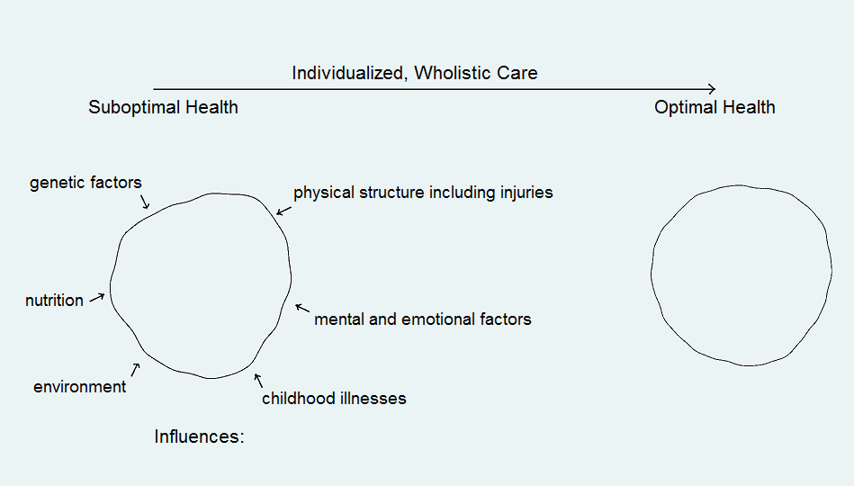

Unlike conventional pharmaceutical based medicine, naturopathy is based on the concept of addressing the underlying causes of medical conditions and designing a program that is both manageable and negotiated with each individual. Therapies include nutrition, clinical nutrition(specialized supplements), herbal/botanical medicine, homeopathy, acupuncture(in my clinic non-invasive, painless, electro-acupuncture), body work and lifestyle suggestions combined with psychological counseling. The best results are achieved when the patient/client becomes an active participant in his or her recovery process.
In our fast paced culture both doctors and patients are tempted to seek a quick "silver bullet" solution for health issues. The reality is that human beings are complex creatures influenced by a variety of factors, and there are no one-size-fits-all treatments appropriate for everyone suffering from a specific condition (see the following diagram)

With growing public awareness and demand we can combine the best of both types of healthcare. Naturopathic medicine is very effective for a broad range of chronic issues including the growing incidence of inflammatory conditions eg. arthritis, fibromyalgia, carpal tunnel syndrome, coronary artery disease, dementia, a vast number of immune problems, fatigue, and mental/emotional conditions including depression.
Conventional (allopathic) medicine is valuable for treating traumatic injuries, acute mental health issues, heart attacks, strokes, ruptured appendixes, emergency surgical procedures and serious infections.
Key benefits of naturopathy:
No
pharmaceutical side effects
Safe, low cost
and thorough ie. I spend
at least 1 hour with each patient
Often covered
by employee and insurance plans
Home visits to those with mobility problems
Complimentary
10 minute in person or phone initial
consultation
Encouragement
to phone in questions, developments or
difficulties
My practice
also includes a loaning library of books and
reading material relevant to each person's condition.
Appointments
start on time - no waiting
Ongoing
education and research to upgrade knowledge of state
of the art developments and findings in the broadest context of health
care.
"add years to your life and life to your years" - Clark Reed, M.Div.,
T.M. Certified Clinical Transactional Analyst, Colleague and Mentor.
After an extensive diagnostic workup, the tools and treatments listed at the beginning of this page are carefully selected to strengthen various organs and body systems, thereby aiding the body's inherent ability to heal itself.